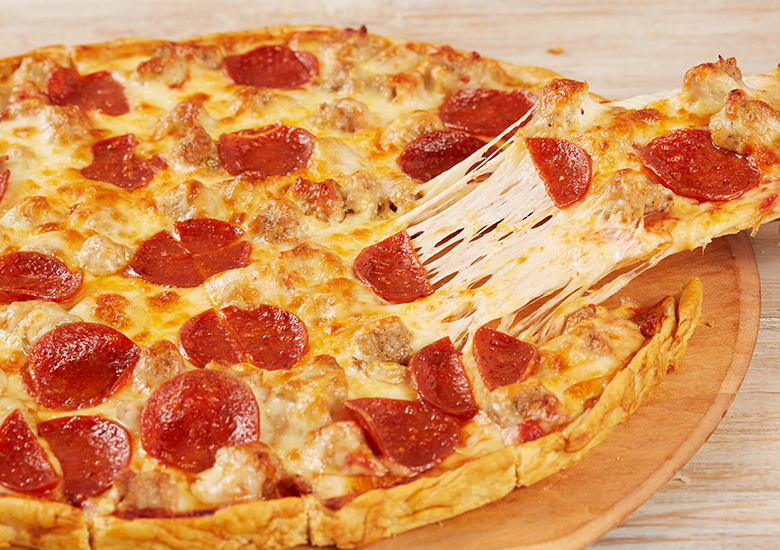
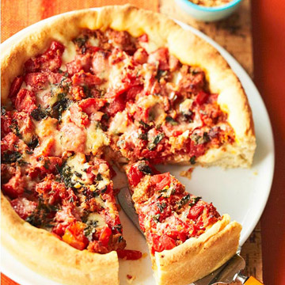

Pizza comes from bread, and bread in the history of the West occupies an important position.
It doesn't always change in the long stream of time, but by adding different ingredients in order to better meet people's needs and preferences.
3,000 years ago, historians discovered a transitional food from bread to pizza in Sardinia, Italy.
In ancient Greece, there were many times when the cake-shaped bread πλακοῦς (plakous, and πλακοῦντος - plakountos) was added to various spices, including garlic and green onion.
There was also the Persian, a king named Dario il Grande (521-486 aC). Use a stone to bake a 'bread', which has cheese.
The earliest transitions have also appeared in the Western poetry Eneide. They are generally called "focaccia" (meaning fire-baked), western "coca" (salty and sweet), Greek and Italian" Pita" or the Turkish word "pide", as well as the "piadina" of Romagna.
Then there are similar foods in other countries. Time is slowly flowing, and the language is not the same. Italian pita/pitta slowly turns into pizza, and the ingredients above are no longer limited to the original ones.
The innovation of pizza is still derived from the addition of tomatoes (in fact, there is also a fish, replaced in the position of the tomato), Naples is the first to bring this change, can be said to be the origin of modern pizza. But in the end, the pizza was brought to the world by a Neapolitan chef who made a special gift to the Savoia Queen's Pizza Margherita in 1889, a three-color pizza named after the Queen.
A beautiful misunderstanding, pizza originated in China: when the famous Italian traveler Marco Polo traveled in China, he liked to eat a kind of northern-style scallion pie. After returning to Italy, he always wanted to be able to taste it again, but it would not be baked. Once, Marco Polo invited a chef from Naples to paint the scallions from northern China.
[2] The cook was made according to the method described by Marco Polo. But after a long day of work, it was still impossible to put the filling into the dough.
Marco Polo proposed to put the stuffing on the cake. After returning to Naples, the chef matched the local cheese and ingredients according to this method.
It was very popular, and the “pizza” spread from then on. According to statistics, there are more than 20,000 pizza stores in Italy, of which 1,200 are in Naples.
Most Neapolitans eat at least one pizza a week, and some eat almost every day for lunch and dinner. Whether the diners are rich or poor, they are used to folding up the pizza and eating it in their hands.
This has become one of the basis for identifying the advantages and disadvantages of pizza. Pizza must be soft and moderate, even if it is folded like a "wallet", the outer layer will not break.

When I have been the USA, I loved the Pizza, it is really good. When I was in Chicago, my friend told me about Chicago-style pizza named Deep-dish pizza. I really like it, and order double cheese and double meat.